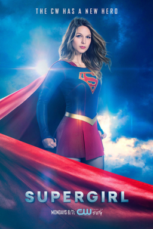

Supergirl
Supergirl é um drama de ação e aventura produzida pela CW baseada nos quadrinhos da personagem Kara Zor-El. A série acompanha a vida da jovem kriptoniana que escapou junto com seu primo, Superman, da destruição do seu planeta Kripton. Após esconder seus poderes por anos, Kara decide abraçar seu destino como uma heroína e usa seus incríveis poderes para proteger as pessoas de National City. Adotando o nome de Supergirl, ela se junta ao Departamento de Operações Extranormais (DEO), uma agência governamental que combate ameaças alienígenas.
